Last updated: 2025-03-12
Checks: 5 2
Knit directory: lister_lab_FLAMESv2_L1775/
This reproducible R Markdown analysis was created with workflowr (version 1.7.1). The Checks tab describes the reproducibility checks that were applied when the results were created. The Past versions tab lists the development history.
Great! Since the R Markdown file has been committed to the Git repository, you know the exact version of the code that produced these results.
Great job! The global environment was empty. Objects defined in the global environment can affect the analysis in your R Markdown file in unknown ways. For reproduciblity it’s best to always run the code in an empty environment.
The command set.seed(20250312) was run prior to running
the code in the R Markdown file. Setting a seed ensures that any results
that rely on randomness, e.g. subsampling or permutations, are
reproducible.
Great job! Recording the operating system, R version, and package versions is critical for reproducibility.
To ensure reproducibility of the results, delete the cache directory
about_cache and re-run the analysis. To have workflowr
automatically delete the cache directory prior to building the file, set
delete_cache = TRUE when running wflow_build()
or wflow_publish().
Using absolute paths to the files within your workflowr project makes it difficult for you and others to run your code on a different machine. Change the absolute path(s) below to the suggested relative path(s) to make your code more reproducible.
| absolute | relative |
|---|---|
| /data/gpfs/projects/punim2510/Project_listerlab/FLAMESv2/analysis/Lister_lab_FLAMESv2_L1775/lister_lab_FLAMESv2_L1775/output/ | output |
| /data/gpfs/projects/punim2510/Project_listerlab/FLAMESv2/analysis/Lister_lab_FLAMESv2_L1775/lister_lab_FLAMESv2_L1775/output/geneSymbol_gene_count.csv | output/geneSymbol_gene_count.csv |
| /data/gpfs/projects/punim2510/Project_listerlab/FLAMESv2/analysis/Lister_lab_FLAMESv2_L1775/lister_lab_FLAMESv2_L1775/output/Lister_L1775_with_doublets_umap_object.rds | output/Lister_L1775_with_doublets_umap_object.rds |
| /data/gpfs/projects/punim2510/Project_listerlab/FLAMESv2/analysis/Lister_lab_FLAMESv2_L1775/lister_lab_FLAMESv2_L1775/output/Lister_L1775_umap_object.rds | output/Lister_L1775_umap_object.rds |
| /data/gpfs/projects/punim2510/Project_listerlab/FLAMESv2/analysis/Lister_lab_FLAMESv2_L1775/lister_lab_FLAMESv2_L1775/output/gene_symbol_oarfish_counts.csv | output/gene_symbol_oarfish_counts.csv |
| /data/gpfs/projects/punim2510/Project_listerlab/FLAMESv2/analysis/Lister_lab_FLAMESv2_L1775/lister_lab_FLAMESv2_L1775/output/Lister_L1775_gene_and_isoform_seurat.rds | output/Lister_L1775_gene_and_isoform_seurat.rds |
Great! You are using Git for version control. Tracking code development and connecting the code version to the results is critical for reproducibility.
The results in this page were generated with repository version 661ec42. See the Past versions tab to see a history of the changes made to the R Markdown and HTML files.
Note that you need to be careful to ensure that all relevant files for
the analysis have been committed to Git prior to generating the results
(you can use wflow_publish or
wflow_git_commit). workflowr only checks the R Markdown
file, but you know if there are other scripts or data files that it
depends on. Below is the status of the Git repository when the results
were generated:
Ignored files:
Ignored: analysis/about_cache/
Untracked files:
Untracked: output/Lister_L1775_gene_and_isoform_seurat.rds
Untracked: output/Lister_L1775_stats.csv
Untracked: output/Lister_L1775_umap_object.rds
Untracked: output/Lister_L1775_with_doublets_umap_object.rds
Untracked: output/geneSymbol_gene_count.csv
Untracked: output/gene_symbol_oarfish_counts.csv
Untracked: output/isoform_gene_dict.csv
Untracked: outputLister_L1775_gene_and_isoform_seurat.rds
Note that any generated files, e.g. HTML, png, CSS, etc., are not included in this status report because it is ok for generated content to have uncommitted changes.
These are the previous versions of the repository in which changes were
made to the R Markdown (analysis/about.Rmd) and HTML
(docs/about.html) files. If you’ve configured a remote Git
repository (see ?wflow_git_remote), click on the hyperlinks
in the table below to view the files as they were in that past version.
| File | Version | Author | Date | Message |
|---|---|---|---|---|
| Rmd | 661ec42 | Sefi Prawer | 2025-03-12 | test_new_QC_params |
| html | 8e80949 | Sefi Prawer | 2025-03-12 | Build site. |
| Rmd | b60ea04 | Sefi Prawer | 2025-03-12 | wflow_publish(c("analysis/index.Rmd", "analysis/about.Rmd", "analysis/license.Rmd")) |
| html | 5bd0722 | Sefi Prawer | 2025-03-12 | Build site. |
| Rmd | 3b2b47b | Sefi Prawer | 2025-03-12 | Lister_lab first commit |
| Rmd | 89531b1 | Sefi Prawer | 2025-03-12 | Start workflowr project. |
Sample: L1775
FALMESv2 run completed on 11 March 2025
Bambu Version: 3.3.5
NDR: 0.048
I had to do a lot of troubleshooting to get FLAMES to run. This
included:
Filtering the genome alignment to remove supplementary alignments.
Using HongYang’s fix for the Bambu version; otherwise, it throws
an error. This fix can be found in the SLURM output files in the
outs folder.
Manually adding BC and UMI tags to the transcriptome alignment
file using the old matched reads.fastq file.
Sorting the file by read name.
load required packages
library(data.table)
library(rtracklayer)Loading required package: GenomicRangesLoading required package: stats4Loading required package: BiocGenerics
Attaching package: 'BiocGenerics'The following objects are masked from 'package:stats':
IQR, mad, sd, var, xtabsThe following objects are masked from 'package:base':
anyDuplicated, aperm, append, as.data.frame, basename, cbind,
colnames, dirname, do.call, duplicated, eval, evalq, Filter, Find,
get, grep, grepl, intersect, is.unsorted, lapply, Map, mapply,
match, mget, order, paste, pmax, pmax.int, pmin, pmin.int,
Position, rank, rbind, Reduce, rownames, sapply, saveRDS, setdiff,
table, tapply, union, unique, unsplit, which.max, which.minLoading required package: S4Vectors
Attaching package: 'S4Vectors'The following objects are masked from 'package:data.table':
first, secondThe following object is masked from 'package:utils':
findMatchesThe following objects are masked from 'package:base':
expand.grid, I, unnameLoading required package: IRanges
Attaching package: 'IRanges'The following object is masked from 'package:data.table':
shiftLoading required package: GenomeInfoDblibrary(Seurat)Loading required package: SeuratObjectLoading required package: sp
Attaching package: 'sp'The following object is masked from 'package:IRanges':
%over%
Attaching package: 'SeuratObject'The following object is masked from 'package:GenomicRanges':
intersectThe following object is masked from 'package:GenomeInfoDb':
intersectThe following object is masked from 'package:IRanges':
intersectThe following object is masked from 'package:S4Vectors':
intersectThe following object is masked from 'package:BiocGenerics':
intersectThe following objects are masked from 'package:base':
intersect, tlibrary(DropletUtils)Loading required package: SingleCellExperimentLoading required package: SummarizedExperimentLoading required package: MatrixGenericsLoading required package: matrixStats
Attaching package: 'MatrixGenerics'The following objects are masked from 'package:matrixStats':
colAlls, colAnyNAs, colAnys, colAvgsPerRowSet, colCollapse,
colCounts, colCummaxs, colCummins, colCumprods, colCumsums,
colDiffs, colIQRDiffs, colIQRs, colLogSumExps, colMadDiffs,
colMads, colMaxs, colMeans2, colMedians, colMins, colOrderStats,
colProds, colQuantiles, colRanges, colRanks, colSdDiffs, colSds,
colSums2, colTabulates, colVarDiffs, colVars, colWeightedMads,
colWeightedMeans, colWeightedMedians, colWeightedSds,
colWeightedVars, rowAlls, rowAnyNAs, rowAnys, rowAvgsPerColSet,
rowCollapse, rowCounts, rowCummaxs, rowCummins, rowCumprods,
rowCumsums, rowDiffs, rowIQRDiffs, rowIQRs, rowLogSumExps,
rowMadDiffs, rowMads, rowMaxs, rowMeans2, rowMedians, rowMins,
rowOrderStats, rowProds, rowQuantiles, rowRanges, rowRanks,
rowSdDiffs, rowSds, rowSums2, rowTabulates, rowVarDiffs, rowVars,
rowWeightedMads, rowWeightedMeans, rowWeightedMedians,
rowWeightedSds, rowWeightedVarsLoading required package: BiobaseWelcome to Bioconductor
Vignettes contain introductory material; view with
'browseVignettes()'. To cite Bioconductor, see
'citation("Biobase")', and for packages 'citation("pkgname")'.
Attaching package: 'Biobase'The following object is masked from 'package:MatrixGenerics':
rowMediansThe following objects are masked from 'package:matrixStats':
anyMissing, rowMedians
Attaching package: 'SummarizedExperiment'The following object is masked from 'package:Seurat':
AssaysThe following object is masked from 'package:SeuratObject':
Assayslibrary(gridExtra)
Attaching package: 'gridExtra'The following object is masked from 'package:Biobase':
combineThe following object is masked from 'package:BiocGenerics':
combinelibrary(BiocParallel)
library(SingleCellExperiment)
library(DoubletFinder)
library(stringr)
library(cowplot)
library(grid)
library(patchwork)
Attaching package: 'patchwork'The following object is masked from 'package:cowplot':
align_plotslibrary(tidyverse)── Attaching core tidyverse packages ──────────────────────── tidyverse 2.0.0 ──
✔ dplyr 1.1.4 ✔ purrr 1.0.2
✔ forcats 1.0.0 ✔ readr 2.1.5
✔ ggplot2 3.5.1 ✔ tibble 3.2.1
✔ lubridate 1.9.3 ✔ tidyr 1.3.1── Conflicts ────────────────────────────────────────── tidyverse_conflicts() ──
✖ lubridate::%within%() masks IRanges::%within%()
✖ dplyr::between() masks data.table::between()
✖ dplyr::collapse() masks IRanges::collapse()
✖ dplyr::combine() masks gridExtra::combine(), Biobase::combine(), BiocGenerics::combine()
✖ dplyr::count() masks matrixStats::count()
✖ dplyr::desc() masks IRanges::desc()
✖ tidyr::expand() masks S4Vectors::expand()
✖ dplyr::filter() masks stats::filter()
✖ dplyr::first() masks S4Vectors::first(), data.table::first()
✖ lubridate::hour() masks data.table::hour()
✖ lubridate::isoweek() masks data.table::isoweek()
✖ dplyr::lag() masks stats::lag()
✖ dplyr::last() masks data.table::last()
✖ lubridate::mday() masks data.table::mday()
✖ lubridate::minute() masks data.table::minute()
✖ lubridate::month() masks data.table::month()
✖ ggplot2::Position() masks BiocGenerics::Position(), base::Position()
✖ lubridate::quarter() masks data.table::quarter()
✖ purrr::reduce() masks GenomicRanges::reduce(), IRanges::reduce()
✖ dplyr::rename() masks S4Vectors::rename()
✖ lubridate::second() masks S4Vectors::second(), data.table::second()
✖ lubridate::second<-() masks S4Vectors::second<-()
✖ dplyr::slice() masks IRanges::slice()
✖ lubridate::stamp() masks cowplot::stamp()
✖ purrr::transpose() masks data.table::transpose()
✖ lubridate::wday() masks data.table::wday()
✖ lubridate::week() masks data.table::week()
✖ lubridate::yday() masks data.table::yday()
✖ lubridate::year() masks data.table::year()
ℹ Use the conflicted package (<http://conflicted.r-lib.org/>) to force all conflicts to become errorslibrary(Matrix)
Attaching package: 'Matrix'
The following objects are masked from 'package:tidyr':
expand, pack, unpack
The following object is masked from 'package:S4Vectors':
expandlibrary(ggplot2)Define gene dict fucntion
# Function to make csv naming resource
make_isoform_gene_symbol_dict <- function(FLAMES_gtf,
reference_gtf,
output_file) {
# Import the first GTF file (transcripts GTF)
gtf1 <- import(FLAMES_gtf)
gtf1_df <- as.data.frame(gtf1)
# Select relevant columns from the first GTF
selected_columns1 <- gtf1_df[, c("transcript_id", "gene_id")]
unique_selected_cols <- unique(selected_columns1)
# Import the second GTF file (reference GTF with gene symbols)
gtf2 <- import(reference_gtf)
gtf2_df <- as.data.frame(gtf2)
# Select relevant columns from the second GTF
selected_columns2 <- gtf2_df[, c("gene_name", "gene_id")]
unique_gene_symbol <- unique(selected_columns2)
# Merge the two data frames on 'gene_id'
combined_data <- merge(unique_selected_cols,
unique_gene_symbol,
by = "gene_id",
all.x = TRUE)
# If 'gene_name' is missing, replace it with 'gene_id'
combined_data$gene_symbol <- ifelse(is.na(combined_data$gene_name),
combined_data$gene_id,
combined_data$gene_name)
# Select relevant columns
final_combined_data <- combined_data[, c("transcript_id", "gene_id", "gene_symbol")]
# Write to a CSV file
write.csv(final_combined_data, file = file.path("/data/gpfs/projects/punim2510/Project_listerlab/FLAMESv2/analysis/Lister_lab_FLAMESv2_L1775/lister_lab_FLAMESv2_L1775/output/", output_file), row.names = FALSE)
return(final_combined_data)
}
#Convert count matrices from Gene ID to gene Symbol
# The FLAMES ref can be found in your selected output folder after running the Flames pipeline.
FLAMES_gtf_file <- "/data/gpfs/projects/punim2510/Project_listerlab/FLAMESv2/outs/isoform_annotated.gtf" #ensure file is unzipped
reference_gtf_file <- "/data/gpfs/projects/punim2510/Project_listerlab/FLAMESv2/resources/gencode.v47.annotation.gtf" # ensure file is unzipped
output_file <- "isoform_gene_dict.csv"
# Call the helper function defined in code block above to create a dictionary containing corresponding gene information for each isoform
# This may take a few minutes
isoform_gene_dict <- make_isoform_gene_symbol_dict(FLAMES_gtf_file,
reference_gtf_file,
output_file)convert_ENSGID_to_geneSymbol <- function(gene_count_matrix_path,
id_symbol_df = isoform_gene_dict,
output_file,
return_df = TRUE) {
# Load the reference dictionary we made earlier - select gene-level cols
id_symbol_df <- as_tibble(id_symbol_df) %>%
dplyr::select(gene_id, gene_symbol)
# Load the data object with ENSGID row names
gene_count_matrix <- fread(gene_count_matrix_path, header = TRUE)
colnames(gene_count_matrix)[1] <- "gene_id"
# Replace ENSGIDs with gene symbols in original flames gene-level count matrix
formatted_gene_count_matrix <- gene_count_matrix %>%
merge(id_symbol_df, by.x = 'gene_id', by.y = 'gene_id') %>% # Add gene symbol information
distinct(gene_symbol, .keep_all = TRUE) %>% # Remove duplicates based on gene symbol
dplyr::select(-gene_id) %>% # Remove the ENSGID column
column_to_rownames(var = "gene_symbol") # use the gene symbols we added as rownames
# Write out the processed data frame
fwrite(formatted_gene_count_matrix,
output_file,
row.names = TRUE)
# Return the processed count matrix for further use if needed
if(return_df){
return(formatted_gene_count_matrix)
}
}
# convert Gene_id to gene symbol for gene counts
gene_counts <- convert_ENSGID_to_geneSymbol(
gene_count_matrix_path = "/data/gpfs/projects/punim2510/Project_listerlab/FLAMESv2/outs/gene_count.csv",
output_file = "output/geneSymbol_gene_count.csv"
)Execute the above code and save intermediate files.
Here i set many code chunck to eval=FALSE, to limit size of workflow
docs.
# standard QC filtering and also remove doublets
#define sample name
sample_id = 'Lister_L1775'
# Read the CSV file
gene_counts <- data.table::fread("/data/gpfs/projects/punim2510/Project_listerlab/FLAMESv2/analysis/Lister_lab_FLAMESv2_L1775/lister_lab_FLAMESv2_L1775/output/geneSymbol_gene_count.csv")
# Convert to data frame to support row names
gene_counts <- as.data.frame(gene_counts)
# Set the first column (V1) as row names and remove it from the data table
rownames(gene_counts) <- gene_counts$V1
gene_counts$V1 <- NULL
# Create Seurat object
seurat_object <- Seurat::CreateSeuratObject(counts = gene_counts, project = sample_id)Warning: Feature names cannot have underscores ('_'), replacing with dashes
('-')Warning: Data is of class data.frame. Coercing to dgCMatrix.# Plot relationship between reads and unique genes per cell
plot_scatter1 <- Seurat::FeatureScatter(seurat_object, feature1 = "nCount_RNA", feature2 = "nFeature_RNA") +
ggplot2::geom_smooth(method = "lm") + NoLegend() +
labs(title = "Reads vs Unique Genes per Cell BEFORE Filtering")
plot(plot_scatter1)`geom_smooth()` using formula = 'y ~ x'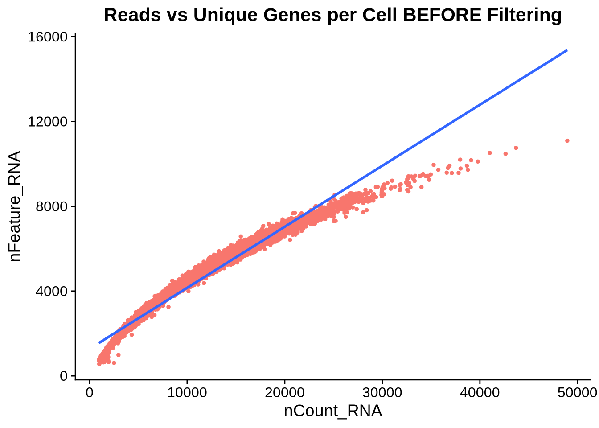
| Version | Author | Date |
|---|---|---|
| 5bd0722 | Sefi Prawer | 2025-03-12 |
Will perform very basic QC. This should probably be done in conjunction with data derived from Chucks paper in Cell. The distributions of cell counts here look more complex.
# Add mitochondrial percentage
seurat_object[["joined"]] <- JoinLayers(seurat_object[["RNA"]])Warning: Key 'rna_' taken, using 'joined_' insteadseurat_object[["percent.mt"]] <- PercentageFeatureSet(seurat_object, pattern = "^MT-")
p1 <- VlnPlot(seurat_object, features = c("nFeature_RNA", "nCount_RNA", "percent.mt"))Warning: Default search for "data" layer in "RNA" assay yielded no results;
utilizing "counts" layer instead.p1 + plot_annotation(title = "QC plots (gene level) BEFORE Filtering")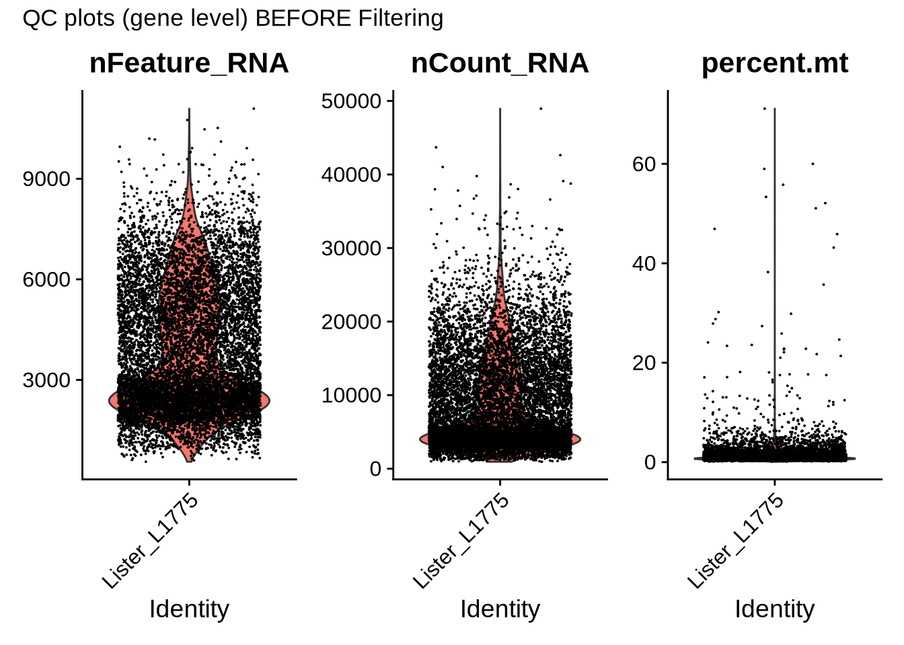
| Version | Author | Date |
|---|---|---|
| 5bd0722 | Sefi Prawer | 2025-03-12 |
# Filter cells based on feature and count thresholds
## define the filtering params - (change these based on your data)
max.features = 10000
min.features = 1000
min.counts = 1000
max.counts = 100000
MT = 10
npc = 15
doublet_rate = 0.08 ### I have no idea what the doublet rate is here will need to chek with chuck will assume 10,000 cells target
cluster_res = 0.9
#now we filter the seurat object based on the QC params listed above
filt_seurat_object <- subset(seurat_object, subset = nFeature_RNA > min.features & nFeature_RNA < max.features & percent.mt < MT & nCount_RNA < max.counts & nCount_RNA > min.counts)
# Plot quality metrics after filtering
p2 <- VlnPlot(filt_seurat_object, features = c("nFeature_RNA", "nCount_RNA", "percent.mt"))Warning: Default search for "data" layer in "RNA" assay yielded no results;
utilizing "counts" layer instead.p2 + plot_annotation(title = "QC metrics gene level AFTER Filtering")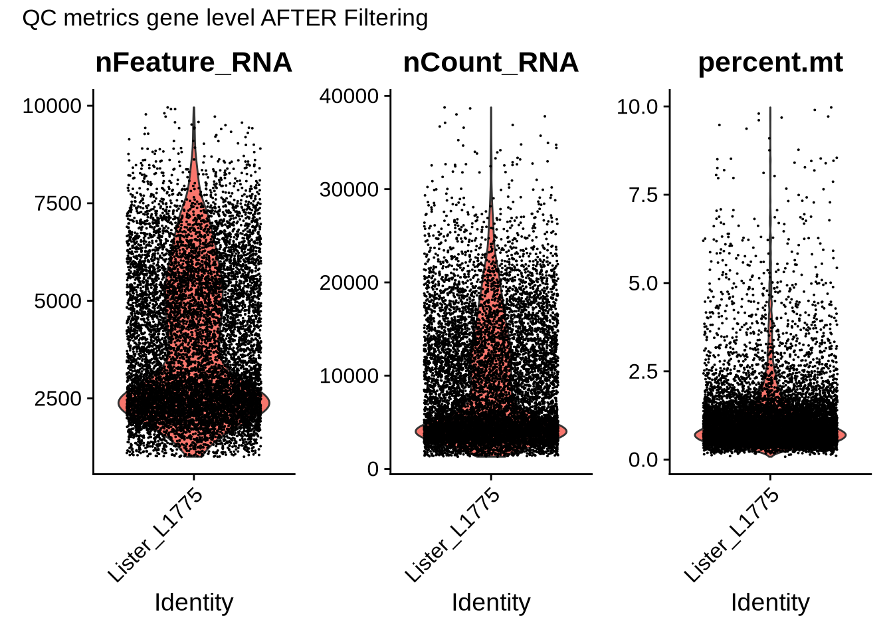
| Version | Author | Date |
|---|---|---|
| 5bd0722 | Sefi Prawer | 2025-03-12 |
dim(filt_seurat_object)[1] 39906 10660dim(seurat_object)[1] 39906 10794# Normalize data
filt_seurat_object <- NormalizeData(filt_seurat_object, normalization.method = "LogNormalize", scale.factor = 10000)
# Identify highly variable features
filt_seurat_object <- FindVariableFeatures(filt_seurat_object, selection.method = "vst", nfeatures = 2000)
# Apply linear transformation
all_genes <- rownames(filt_seurat_object)
filt_seurat_object <- ScaleData(filt_seurat_object, features = all_genes)
# Perform PCA
filt_seurat_object <- RunPCA(filt_seurat_object, features = VariableFeatures(object = filt_seurat_object))
# Cluster cells
filt_seurat_object <- FindNeighbors(filt_seurat_object, dims = 1:npc)
filt_seurat_object <- FindClusters(filt_seurat_object, resolution = cluster_res)
# Perform UMAP
filt_seurat_object <- RunUMAP(filt_seurat_object, dims = 1:npc)### Filter out doublets (remember to modify doublet rate if samples have variable target cells)
## pK Identification (no ground-truth)
sweep.res.list_pbmc <- paramSweep(filt_seurat_object, PCs = 1:npc, sct = FALSE)
sweep.stats_pbmc <- summarizeSweep(sweep.res.list_pbmc, GT = FALSE)
bcmvn_pbmc <- find.pK(sweep.stats_pbmc)
#####
pK <- bcmvn_pbmc %>% filter(BCmetric == max(BCmetric)) %>% dplyr::select(pK)
pK <- as.numeric(as.character(pK[[1]]))
## Homotypic Doublet Proportion Estimate
annotations <- filt_seurat_object@meta.data$seurat_clusters
homotypic.prop <- modelHomotypic(annotations)
nExp_poi <- round(doublet_rate * nrow(filt_seurat_object@meta.data))
nExp_poi.adj <- round(nExp_poi * (1 - homotypic.prop))
# Run doubletFinder
filt_seurat_object <- doubletFinder(filt_seurat_object, PCs = 1:npc, pN = 0.25, pK = pK, nExp = nExp_poi.adj, reuse.pANN = FALSE, sct = FALSE)
colnames(filt_seurat_object@meta.data) <- sub("DF.classifications_.*$", "DF.classifications", colnames(filt_seurat_object@meta.data))
###Save the seurat object with doublets listed
filt_seurat_object_doublets <- filt_seurat_object
filt_seurat_object <- subset(filt_seurat_object, subset = DF.classifications == 'Singlet')#load in seurats from previous step
filt_seurat_object_doublets <- readRDS("/data/gpfs/projects/punim2510/Project_listerlab/FLAMESv2/analysis/Lister_lab_FLAMESv2_L1775/lister_lab_FLAMESv2_L1775/output/Lister_L1775_with_doublets_umap_object.rds")
filt_seurat_object <- readRDS("/data/gpfs/projects/punim2510/Project_listerlab/FLAMESv2/analysis/Lister_lab_FLAMESv2_L1775/lister_lab_FLAMESv2_L1775/output/Lister_L1775_umap_object.rds")
# figures
ggplot_list <- list(
ElbowPlot(filt_seurat_object) + labs(title = 'SD explained by each PC') + theme(text = element_text(size = 10)),
FeatureScatter(filt_seurat_object, feature1 = "nCount_RNA", feature2 = "nFeature_RNA") +
geom_smooth(method = "lm") + NoLegend() + labs(title = "Association between reads and \nunique genes per cell AFTER filtering"),
DimPlot(filt_seurat_object, reduction = "umap") +
labs(color = "Cluster \n(from PCA)", title = '') +
theme(text = element_text(size = 10)),
FeaturePlot(filt_seurat_object, reduction = "umap", features = 'nCount_RNA') +
labs(color = "UMI count", title = '') +
theme(text = element_text(size = 10)),
FeaturePlot(filt_seurat_object, reduction = "umap", features = 'nFeature_RNA') +
labs(color = str_wrap("Feature count (gene)", 15), title = '') +
theme(text = element_text(size = 10)),
p2
)
combined_plots <- plot_grid(plotlist = ggplot_list, ncol = 3)`geom_smooth()` using formula = 'y ~ x' plot(combined_plots)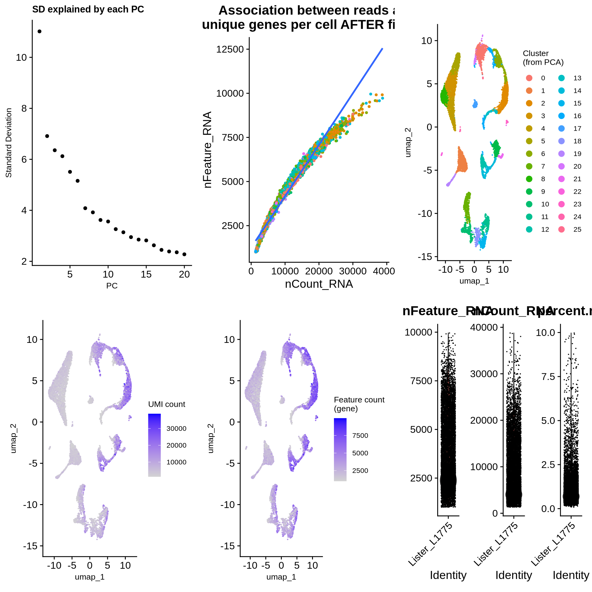
plot(DimPlot(filt_seurat_object_doublets, reduction = 'umap', group.by = "DF.classifications"))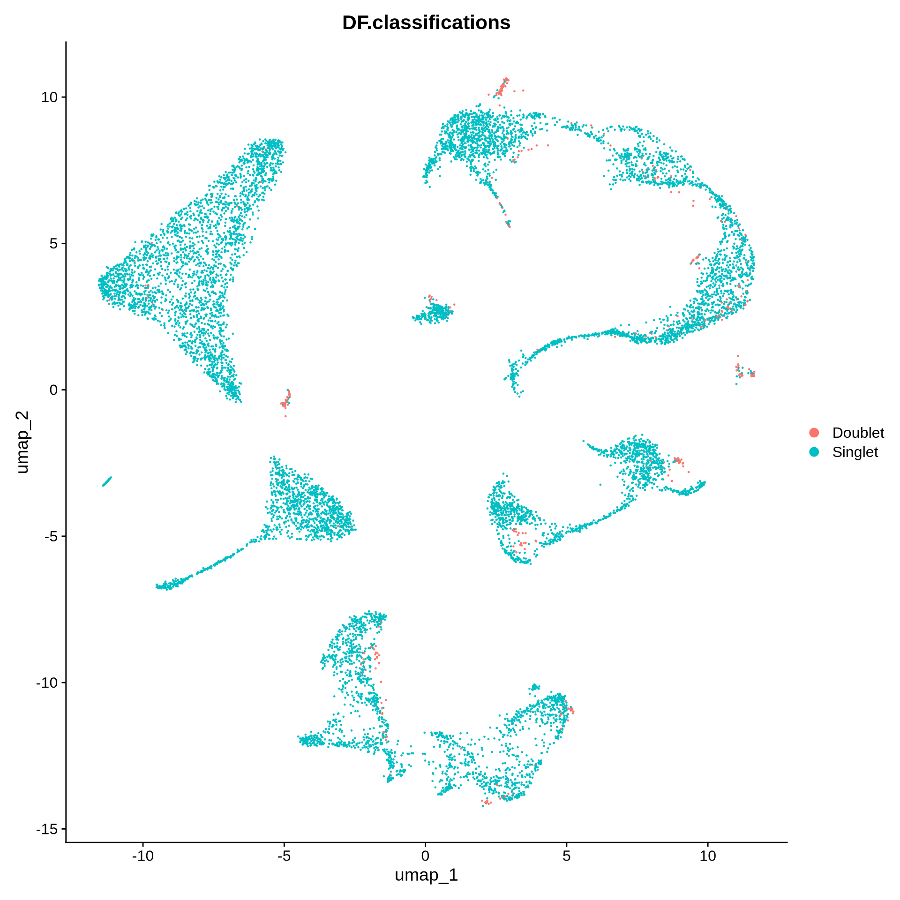
# Summary doublets
statsDoublets <- filt_seurat_object_doublets@meta.data %>%
group_by(DF.classifications) %>%
summarize(Median_nCount_RNA = median(nCount_RNA), Median_nFeature_RNA = median(nFeature_RNA), Count = n())
tbl_sts1 <- tableGrob(statsDoublets)
grid.newpage()
grid.draw(tbl_sts1)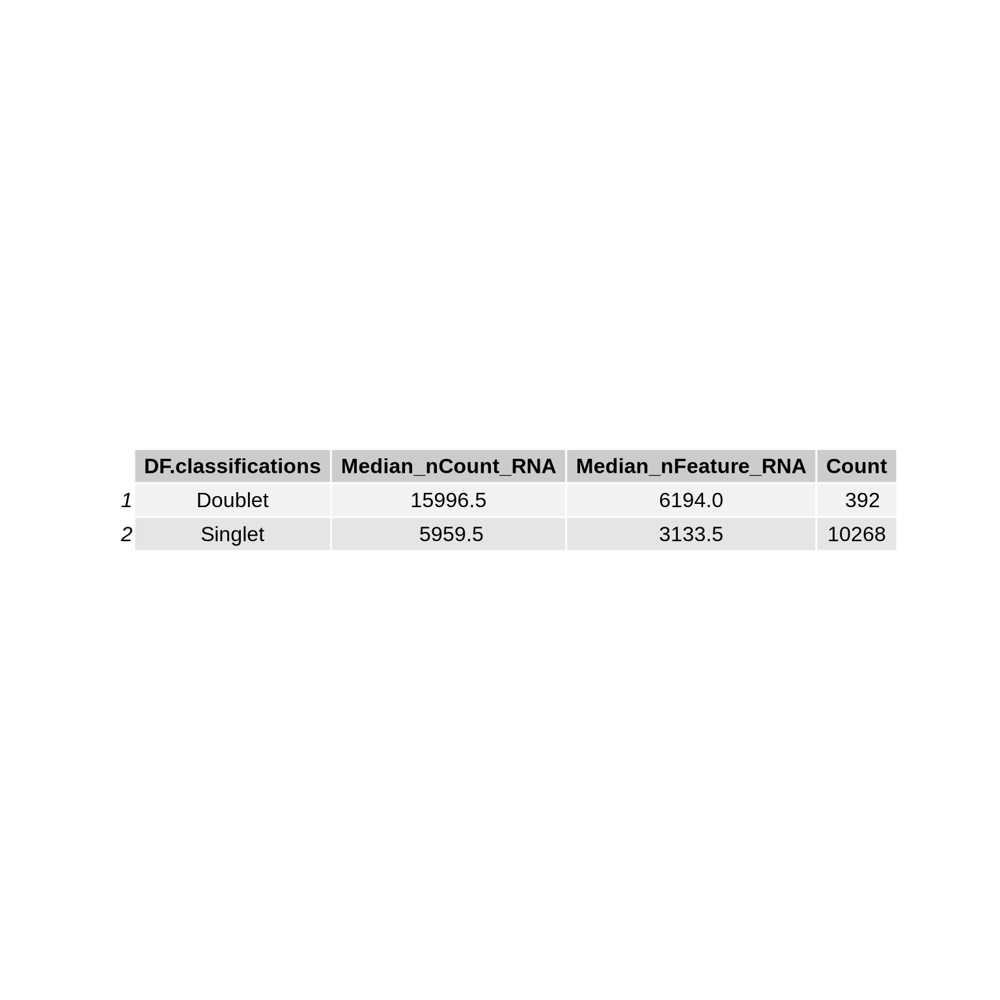
| Version | Author | Date |
|---|---|---|
| 8e80949 | Sefi Prawer | 2025-03-12 |
stats_sumary <- rbind("Sample ID" = sample_id,
"Cells_before_filter" = dim(seurat_object)[2],
"Cells_after_filter" = dim(filt_seurat_object)[2],
"Median Feature per Cell before filter" = median(seurat_object$nFeature_RNA),
"Median Reads per Gene before filter" = median(seurat_object$nCount_RNA),
"Median Feature per Cell" = median(filt_seurat_object$nFeature_RNA),
"Median Reads per Gene" = median(filt_seurat_object$nCount_RNA),
"Max Features" = max.features,
"Min Features" = min.features,
"Min Counts" = min.counts,
"Max Counts" = max.counts,
"MT Percentage" = MT,
"NPCs" = npc,
"Median Percent MT before Filter" = median(seurat_object@meta.data[["percent.mt"]]),
"Median Percent MT after Filter" = median(filt_seurat_object@meta.data[["percent.mt"]]))
tbl_sts2 <- tableGrob(stats_sumary)
grid.draw(tbl_sts2)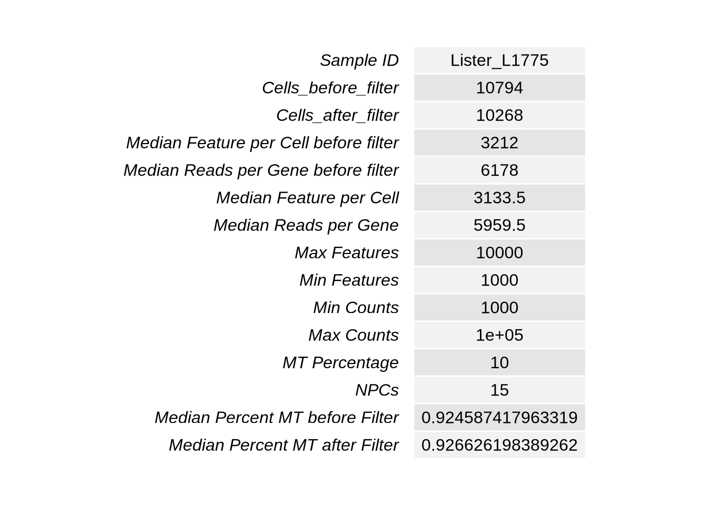
| Version | Author | Date |
|---|---|---|
| 5bd0722 | Sefi Prawer | 2025-03-12 |
#save files
saveRDS(filt_seurat_object, file = paste0("output/", sample_id, "_umap_object.rds"))
saveRDS(filt_seurat_object_doublets, file = paste0("output/",sample_id, "_with_doublets_umap_object.rds"))
write.table(stats_sumary, file = paste0("output/", sample_id, "_stats.csv")) #This function reads in Oarfish count files and creates a csv file of count data. The function also appends the gene symbol to the ENSTID
process_oarfish_files_to_counts_matrix <- function(flames_output_folder, sample_name, output_dir) {
# Read in the resource table (transcript_id, gene_id, gene_symbol)
# Define the file paths based on the sample name
count_matrix_path <- file.path(flames_output_folder, paste0(sample_name, ".count.mtx"))
barcodes_path <- file.path(flames_output_folder, paste0(sample_name, ".barcodes.txt"))
features_path <- file.path(flames_output_folder, paste0(sample_name, ".features.txt"))
# Read the data
counts <- readMM(count_matrix_path)
barcodes <- readLines(barcodes_path)
features <- read.delim(features_path, header = FALSE)
# Transpose the matrix for Seurat compatibility
counts <- t(counts)
# Set row and column names
rownames(counts) <- features$V1
colnames(counts) <- barcodes
# Convert to a data frame
counts_df <- as.data.frame(counts)
# Add transcript_id as the first column
counts_df$transcript_id <- rownames(counts_df)
counts_df <- counts_df[, c(ncol(counts_df), 1:(ncol(counts_df)-1))]
# Merge with the resource table to add gene symbols
df_genesymbol <- counts_df %>%
left_join(isoform_gene_dict, by = "transcript_id")
# Remove the gene_id column and reorder the columns
df_genesymbol$gene_id <- NULL
df_genesymbol <- df_genesymbol[, c(ncol(df_genesymbol), 1:(ncol(df_genesymbol)-1))]
# Update row names to include gene symbol instead of transcript_id
rownames(df_genesymbol) <- paste0(df_genesymbol$transcript_id, "_", df_genesymbol$gene_symbol)
df_genesymbol$transcript_id <- NULL
df_genesymbol$gene_symbol <- NULL
# Write the output to a CSV file
output_path <- file.path(output_dir, paste0("gene_symbol_", sample_name, "_counts.csv"))
# Write the df_genesymbol data frame to the CSV file using fwrite
fwrite(df_genesymbol, output_path)
cat("Processed sample:", sample_name, "\nOutput saved to:", output_path, "\n")
return(df_genesymbol)
}
oarfish_counts <- process_oarfish_files_to_counts_matrix(
flames_output_folder = "/data/gpfs/projects/punim2510/Project_listerlab/FLAMESv2/outs",
sample_name = "oarfish",
output_dir = "output/"
)
make a seurat object with oarfish counts and make assay.
Add them back to gene object
# Load the data object with ENSGID row names
# Read the CSV file
oarfish_counts <- fread("/data/gpfs/projects/punim2510/Project_listerlab/FLAMESv2/analysis/Lister_lab_FLAMESv2_L1775/lister_lab_FLAMESv2_L1775/output/gene_symbol_oarfish_counts.csv")
# Convert to data frame to support row names
oarfish_counts <- as.data.frame(oarfish_counts)
# Set the first column (V1) as row names and remove it from the data table
rownames(oarfish_counts) <- oarfish_counts$V1
oarfish_counts$V1 <- NULL
# Create the Seurat object with iso counts
iso_seurat_obj <- CreateSeuratObject(counts = oarfish_counts, project = sample_id)
VlnPlot(iso_seurat_obj, features = c("nFeature_RNA", "nCount_RNA"), ncol = 2) + plot_annotation(title = "QC plots (isoform level) BEFORE Filtering")
#### isofrom assay
## filter the data so iso and gene cells match
oarfish_iso_matched_gene <- subset(iso_seurat_obj, cells=filt_seurat_object@graphs[["RNA_nn"]]@Dimnames[[1]])
#Rejoin data sets after integration
oarfish_iso_matched_gene <- JoinLayers(oarfish_iso_matched_gene)
counts_table_iso <- oarfish_iso_matched_gene[["RNA"]]$counts
#as.data.frame(counts_table_iso) -> df_iso
# Remove rows where the sum is 0
#df_iso <- df_iso[rowSums(df_iso) != 0, ] # this kills the env will skip for now
#filt_seurat_object[["iso"]] <- CreateAssay5Object(counts = df_iso)
filt_seurat_object[["iso"]] <- CreateAssay5Object(counts = counts_table_iso)
# Normalize the new assay data
filt_seurat_object <- NormalizeData(filt_seurat_object, assay = "iso")
filt_seurat_object <- FindVariableFeatures(filt_seurat_object, assay = "iso")
filt_seurat_object <- ScaleData(filt_seurat_object, assay = "iso")
filt_seurat_object <- RunPCA(filt_seurat_object, assay = "iso", reduction.name = "pca_iso")
#Run UMAP
filt_seurat_object <- RunUMAP(filt_seurat_object, reduction = "pca_iso", dims = 1:15,
assay = "iso", reduction.name = "umap_iso")
#check to see that we have two assays
filt_seurat_objectsaveRDS(filt_seurat_object, file = paste0("/data/gpfs/projects/punim2510/Project_listerlab/FLAMESv2/analysis/Lister_lab_FLAMESv2_L1775/lister_lab_FLAMESv2_L1775/output/", sample_id, "_gene_and_isoform_seurat.rds"))filt_seurat_object <- readRDS("/data/gpfs/projects/punim2510/Project_listerlab/FLAMESv2/analysis/Lister_lab_FLAMESv2_L1775/lister_lab_FLAMESv2_L1775/output/Lister_L1775_gene_and_isoform_seurat.rds")
# visualize the UMAP for Gene and isoform
DimPlot(filt_seurat_object, label = TRUE, reduction = "umap") + ggtitle("UMAP gene level clustering") |
DimPlot(filt_seurat_object, label = TRUE, reduction = "umap_iso") + ggtitle("UMAP isoform level clustering")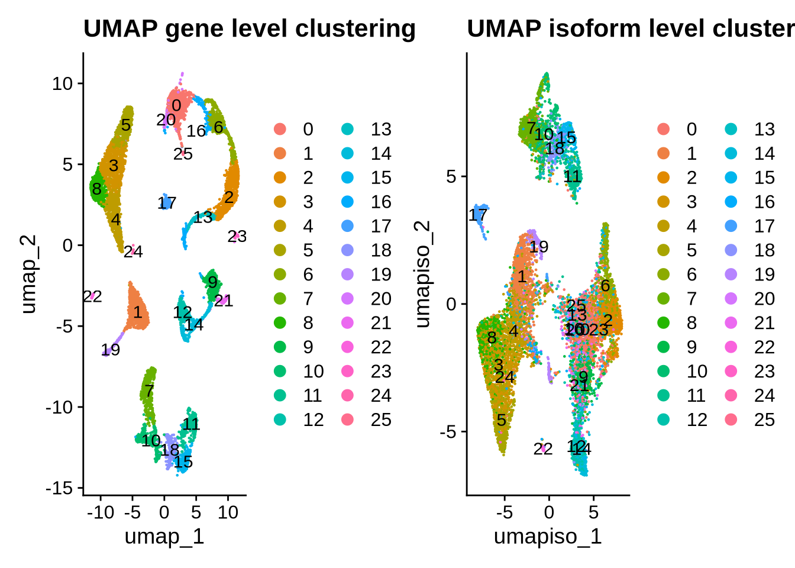
| Version | Author | Date |
|---|---|---|
| 5bd0722 | Sefi Prawer | 2025-03-12 |
stats_sumary <- rbind("Sample ID" = sample_id,
"Cells_before_filter" = dim(seurat_object)[2],
"Cells_after_filter" = dim(filt_seurat_object)[2],
"Median genes per Cell before filter" = median(seurat_object$nFeature_RNA),
"Median gene counts per cell before filter" = median(seurat_object$nCount_RNA),
"Median genes per cell" = median(filt_seurat_object$nFeature_RNA),
"Median isoforms per cell" = median(filt_seurat_object$nFeature_iso),
"Median isoform counts per cell" = round(median(filt_seurat_object$nCount_iso), 2),
"Max Features" = max.features,
"Min Features" = min.features,
"Min Counts" = min.counts,
"Max Counts" = max.counts,
"MT Percentage" = MT,
"NPCs" = npc,
"Median Percent MT before Filter" = round(median(seurat_object@meta.data[["percent.mt"]]), 2),
"Median Percent MT after Filter" = round(median(filt_seurat_object@meta.data[["percent.mt"]]), 2))
tbl_sts2 <- tableGrob(stats_sumary)
grid.draw(tbl_sts2)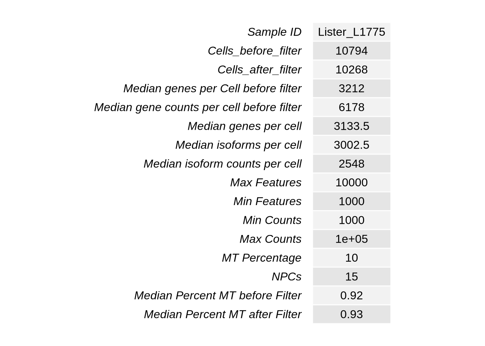
| Version | Author | Date |
|---|---|---|
| 8e80949 | Sefi Prawer | 2025-03-12 |
FeaturePlot(filt_seurat_object, features = c("nCount_RNA", "nFeature_RNA", "percent.mt"))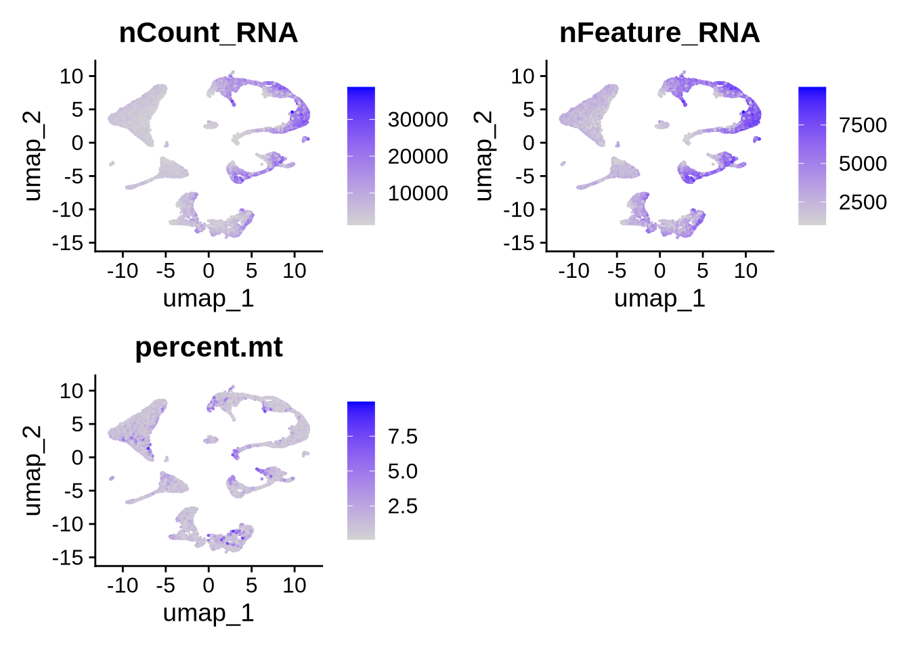
| Version | Author | Date |
|---|---|---|
| 8e80949 | Sefi Prawer | 2025-03-12 |
VlnPlot(filt_seurat_object, features = c("nCount_RNA", "nFeature_RNA", "percent.mt"), group.by = "orig.ident")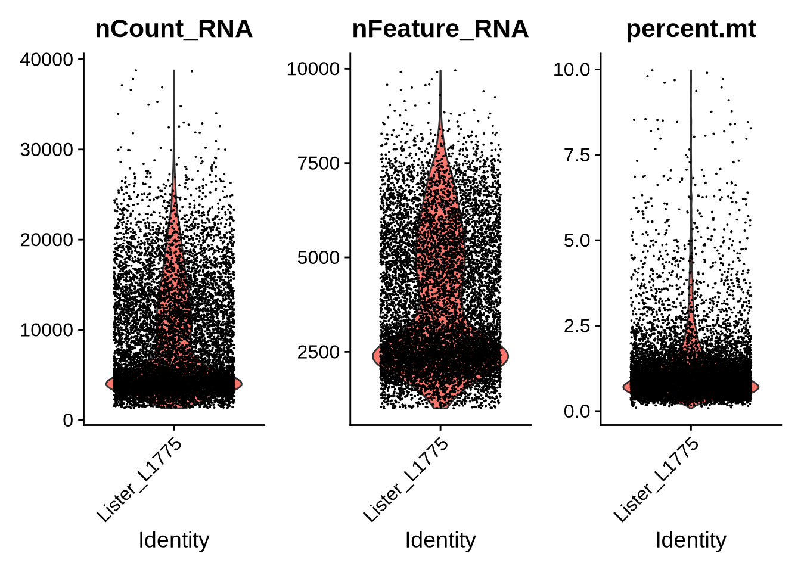
| Version | Author | Date |
|---|---|---|
| 8e80949 | Sefi Prawer | 2025-03-12 |
Mike wants to see the effect of modifying the filtering params to see
the effect on the summary stats.
Here is a quick adjustment of the parms but ideally this should be run
through a program that more precisely chooses a threshold. (see Fernando
code for this addition - think it works on sce objects)
Note: filtering a filtered object here so just be careful that you use
the right object for downstream analysis
# Filter cells based on feature and count thresholds
## define the filtering params - (change these based on your data)
max.features = 8000
min.features = 2000
min.counts = 2000
max.counts = 30000
MT = 10
npc = 15
doublet_rate = 0.08 ### I have no idea what the doublet rate is here will need to chek with chuck will assume 10,000 cells target
cluster_res = 0.9
#now we filter the seurat object based on the QC params listed above
filt_seurat_object <- subset(filt_seurat_object, subset = nFeature_RNA > min.features & nFeature_RNA < max.features & percent.mt < MT & nCount_RNA < max.counts & nCount_RNA > min.counts)
stats_sumary <- rbind("Sample ID" = sample_id,
"Cells_before_filter" = dim(seurat_object)[2],
"Cells_after_filter" = dim(filt_seurat_object)[2],
"Median genes per Cell before filter" = median(seurat_object$nFeature_RNA),
"Median gene counts per cell before filter" = median(seurat_object$nCount_RNA),
"Median genes per cell" = median(filt_seurat_object$nFeature_RNA),
"Median isoforms per cell" = median(filt_seurat_object$nFeature_iso),
"Median isoform counts per cell" = round(median(filt_seurat_object$nCount_iso), 2),
"Max Features" = max.features,
"Min Features" = min.features,
"Min Counts" = min.counts,
"Max Counts" = max.counts,
"MT Percentage" = MT,
"NPCs" = npc,
"Median Percent MT before Filter" = round(median(seurat_object@meta.data[["percent.mt"]]), 2),
"Median Percent MT after Filter" = round(median(filt_seurat_object@meta.data[["percent.mt"]]), 2))
tbl_sts2 <- tableGrob(stats_sumary)
grid.draw(tbl_sts2)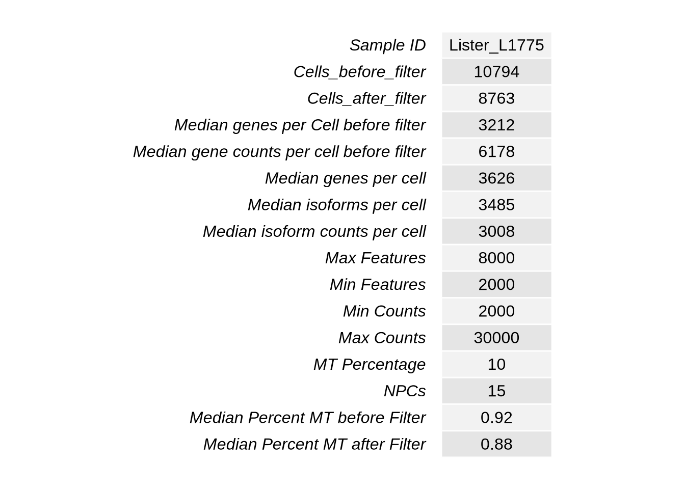
| Version | Author | Date |
|---|---|---|
| 8e80949 | Sefi Prawer | 2025-03-12 |
FeaturePlot(filt_seurat_object, features = c("nCount_RNA", "nFeature_RNA", "percent.mt"))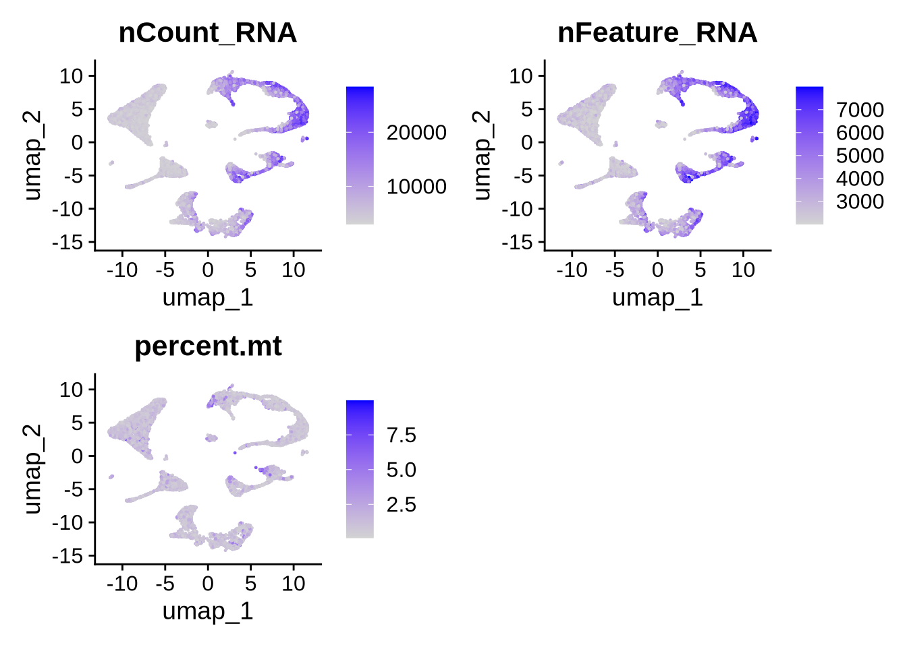
| Version | Author | Date |
|---|---|---|
| 8e80949 | Sefi Prawer | 2025-03-12 |
VlnPlot(filt_seurat_object, features = c("nCount_RNA", "nFeature_RNA", "percent.mt"), group.by = "orig.ident")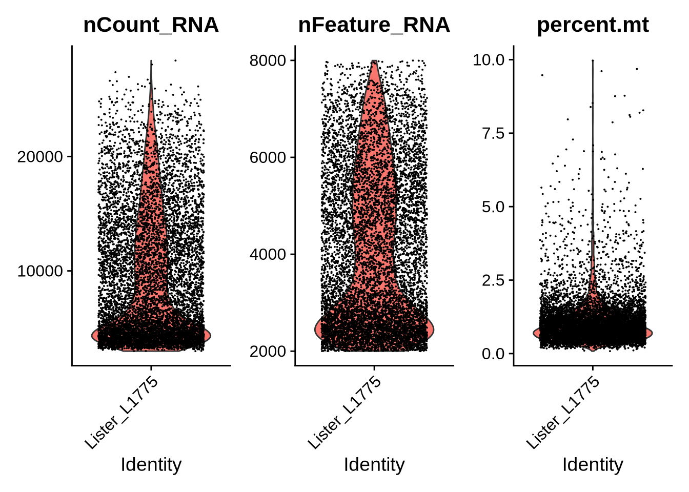
| Version | Author | Date |
|---|---|---|
| 8e80949 | Sefi Prawer | 2025-03-12 |
sessionInfo()R version 4.4.0 (2024-04-24)
Platform: x86_64-pc-linux-gnu
Running under: Red Hat Enterprise Linux 9.4 (Plow)
Matrix products: default
BLAS/LAPACK: FlexiBLAS OPENBLAS; LAPACK version 3.10.1
locale:
[1] LC_CTYPE=en_AU.UTF-8 LC_NUMERIC=C
[3] LC_TIME=en_AU.UTF-8 LC_COLLATE=en_AU.UTF-8
[5] LC_MONETARY=en_AU.UTF-8 LC_MESSAGES=en_AU.UTF-8
[7] LC_PAPER=en_AU.UTF-8 LC_NAME=C
[9] LC_ADDRESS=C LC_TELEPHONE=C
[11] LC_MEASUREMENT=en_AU.UTF-8 LC_IDENTIFICATION=C
time zone: Australia/Melbourne
tzcode source: system (glibc)
attached base packages:
[1] grid stats4 stats graphics grDevices utils datasets
[8] methods base
other attached packages:
[1] Matrix_1.7-1 lubridate_1.9.3
[3] forcats_1.0.0 dplyr_1.1.4
[5] purrr_1.0.2 readr_2.1.5
[7] tidyr_1.3.1 tibble_3.2.1
[9] ggplot2_3.5.1 tidyverse_2.0.0
[11] patchwork_1.3.0 cowplot_1.1.3
[13] stringr_1.5.1 DoubletFinder_2.0.4
[15] BiocParallel_1.40.0 gridExtra_2.3
[17] DropletUtils_1.26.0 SingleCellExperiment_1.28.0
[19] SummarizedExperiment_1.36.0 Biobase_2.66.0
[21] MatrixGenerics_1.18.0 matrixStats_1.4.1
[23] Seurat_5.1.0 SeuratObject_5.0.2
[25] sp_2.1-4 rtracklayer_1.64.0
[27] GenomicRanges_1.58.0 GenomeInfoDb_1.42.0
[29] IRanges_2.40.0 S4Vectors_0.44.0
[31] BiocGenerics_0.52.0 data.table_1.16.2
[33] workflowr_1.7.1
loaded via a namespace (and not attached):
[1] fs_1.6.5 spatstat.sparse_3.1-0
[3] bitops_1.0-9 httr_1.4.7
[5] RColorBrewer_1.1-3 tools_4.4.0
[7] sctransform_0.4.1 utf8_1.2.4
[9] R6_2.5.1 HDF5Array_1.34.0
[11] lazyeval_0.2.2 uwot_0.2.2
[13] mgcv_1.9-1 rhdf5filters_1.18.0
[15] withr_3.0.2 progressr_0.15.0
[17] cli_3.6.3 spatstat.explore_3.3-1
[19] fastDummies_1.7.4 labeling_0.4.3
[21] sass_0.4.9 spatstat.data_3.1-2
[23] ggridges_0.5.6 pbapply_1.7-2
[25] Rsamtools_2.20.0 R.utils_2.12.3
[27] parallelly_1.38.0 limma_3.62.1
[29] rstudioapi_0.15.0 generics_0.1.3
[31] BiocIO_1.16.0 ica_1.0-3
[33] spatstat.random_3.3-1 ggbeeswarm_0.7.2
[35] fansi_1.0.6 abind_1.4-8
[37] R.methodsS3_1.8.2 lifecycle_1.0.4
[39] whisker_0.4.1 yaml_2.3.10
[41] edgeR_4.4.0 rhdf5_2.50.0
[43] SparseArray_1.6.0 Rtsne_0.17
[45] promises_1.3.0 dqrng_0.4.1
[47] crayon_1.5.3 miniUI_0.1.1.1
[49] lattice_0.22-6 beachmat_2.22.0
[51] pillar_1.9.0 knitr_1.48
[53] rjson_0.2.23 future.apply_1.11.3
[55] codetools_0.2-20 leiden_0.4.3.1
[57] glue_1.8.0 getPass_0.2-4
[59] spatstat.univar_3.0-0 vctrs_0.6.5
[61] png_0.1-8 spam_2.10-0
[63] gtable_0.3.6 cachem_1.1.0
[65] xfun_0.49 S4Arrays_1.6.0
[67] mime_0.12 survival_3.7-0
[69] statmod_1.5.0 fitdistrplus_1.2-1
[71] ROCR_1.0-11 nlme_3.1-166
[73] RcppAnnoy_0.0.22 rprojroot_2.0.4
[75] bslib_0.8.0 irlba_2.3.5.1
[77] vipor_0.4.7 KernSmooth_2.23-24
[79] colorspace_2.1-1 ggrastr_1.0.2
[81] tidyselect_1.2.1 processx_3.8.2
[83] compiler_4.4.0 curl_6.0.0
[85] git2r_0.35.0 DelayedArray_0.32.0
[87] plotly_4.10.4 scales_1.3.0
[89] lmtest_0.9-40 callr_3.7.3
[91] digest_0.6.37 goftest_1.2-3
[93] spatstat.utils_3.1-1 rmarkdown_2.29
[95] XVector_0.46.0 htmltools_0.5.8.1
[97] pkgconfig_2.0.3 sparseMatrixStats_1.18.0
[99] highr_0.11 fastmap_1.2.0
[101] rlang_1.1.4 htmlwidgets_1.6.4
[103] UCSC.utils_1.2.0 shiny_1.9.1
[105] DelayedMatrixStats_1.28.0 farver_2.1.2
[107] jquerylib_0.1.4 zoo_1.8-12
[109] jsonlite_1.8.9 R.oo_1.27.0
[111] RCurl_1.98-1.16 magrittr_2.0.3
[113] scuttle_1.16.0 GenomeInfoDbData_1.2.13
[115] dotCall64_1.2 Rhdf5lib_1.28.0
[117] munsell_0.5.1 Rcpp_1.0.13-1
[119] reticulate_1.39.0 stringi_1.8.4
[121] zlibbioc_1.52.0 MASS_7.3-61
[123] plyr_1.8.9 parallel_4.4.0
[125] listenv_0.9.1 ggrepel_0.9.6
[127] deldir_2.0-4 Biostrings_2.72.1
[129] splines_4.4.0 tensor_1.5
[131] hms_1.1.3 locfit_1.5-9.10
[133] ps_1.7.5 igraph_2.1.1
[135] spatstat.geom_3.3-2 RcppHNSW_0.6.0
[137] reshape2_1.4.4 XML_3.99-0.17
[139] evaluate_1.0.1 tzdb_0.4.0
[141] httpuv_1.6.15 RANN_2.6.2
[143] polyclip_1.10-7 future_1.34.0
[145] scattermore_1.2 xtable_1.8-4
[147] restfulr_0.0.15 RSpectra_0.16-2
[149] later_1.3.2 viridisLite_0.4.2
[151] beeswarm_0.4.0 GenomicAlignments_1.40.0
[153] cluster_2.1.6 timechange_0.3.0
[155] globals_0.16.3